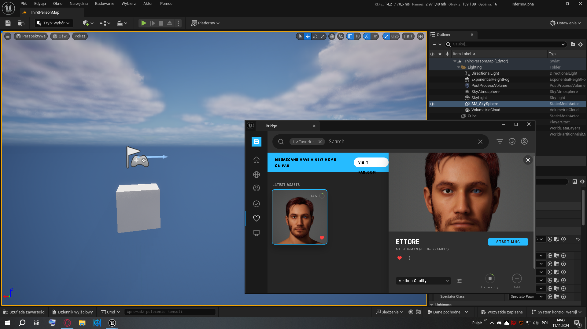
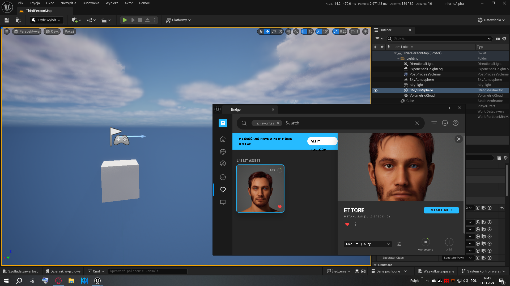

Work in progress!
Work overview
Work overview
Inferno is an upcoming 2.5D side-scroller action game that combines mythological and psychological horror elements. Drawing inspiration from the challenging gameplay of Dark Souls and the atmospheric storytelling of classic Polish literature, Inferno promises a deeply immersive journey through realms of suffering, revenge, and redemption.
The player takes on the role of Ash Thorne, a character cast into purgatory after a tragic suicide driven by the death of his lover, Lilith. The narrative unfolds with Ash traversing harrowing landscapes and confronting both literal and metaphorical demons in a bid to save Lilith’s soul, which has been claimed by the dark forces that haunt this realm. With each level, players will encounter familiar figures from classic literature, including the tortured spirits and characters from Adam Mickiewicz’s Dziady, reimagined as NPCs and bosses in Ash’s journey.
Gameplay: Inferno is heavily inspired by the mechanics of Souls-like games, featuring challenging combat that tests the player’s timing, skill, and strategic approach. Players will need to learn attack patterns, dodge effectively, and choose their gear wisely to survive against both minor enemies and formidable bosses. Unique abilities and weapons can be unlocked, each tailored to the dark setting and inspired by mythological themes.
Visual Style and Atmosphere: Set in a gothic vision of purgatory, the game’s design draws on classic Polish and Slavic aesthetics. Using the power of Unreal Engine 5, Inferno offers atmospheric environments filled with haunting shadows, eerie lighting, and otherworldly landscapes. The mood is enhanced by a haunting soundtrack and detailed, somber visual storytelling, echoing the grim beauty of Ash’s journey.
A Story of Redemption and Vengeance: Inferno is more than just a test of skill; it’s a layered narrative exploring themes of love, loss, and the struggle for redemption. Ash’s journey takes him through a symbolic reflection of the human psyche, confronting moral dilemmas and philosophical questions that challenge the player to consider the costs of revenge and the possibility of forgiveness.
Join Ash in his Quest: For fans of challenging gameplay, deep storytelling, and intricate lore, Inferno promises an experience that lingers long after the credits roll. With its release, Spectrum Games aims to deliver a game that not only challenges players but also invites them to explore the darker sides of human experience through an unforgettable journey.